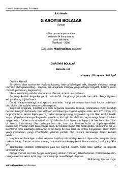

GBAziz Nesinning bolalar hayoti va maktab voqealariga bag'ishlangan qiziqarli romani.
Aziz Nesinning ushbu romanida bolalar hayoti, maktab muhiti va qiziqarli voqealar hajviy tarzda hikoya qilinadi. Asar bolalar va kattalar o'rtasidagi munosabatlarni o'ziga xos tarzda ochib beradi. Turk tilidan tarjima qilingan.